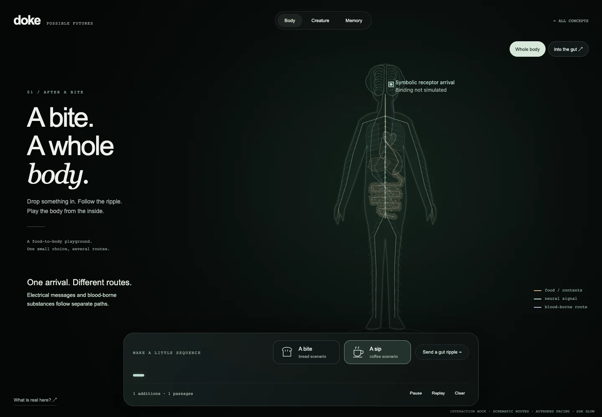
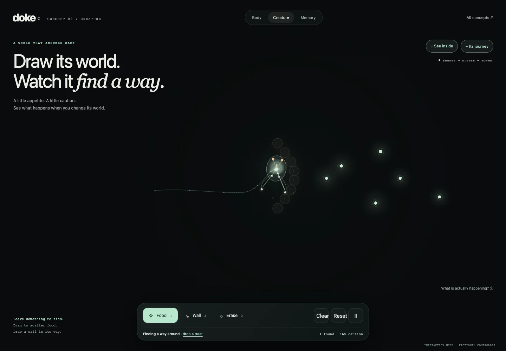
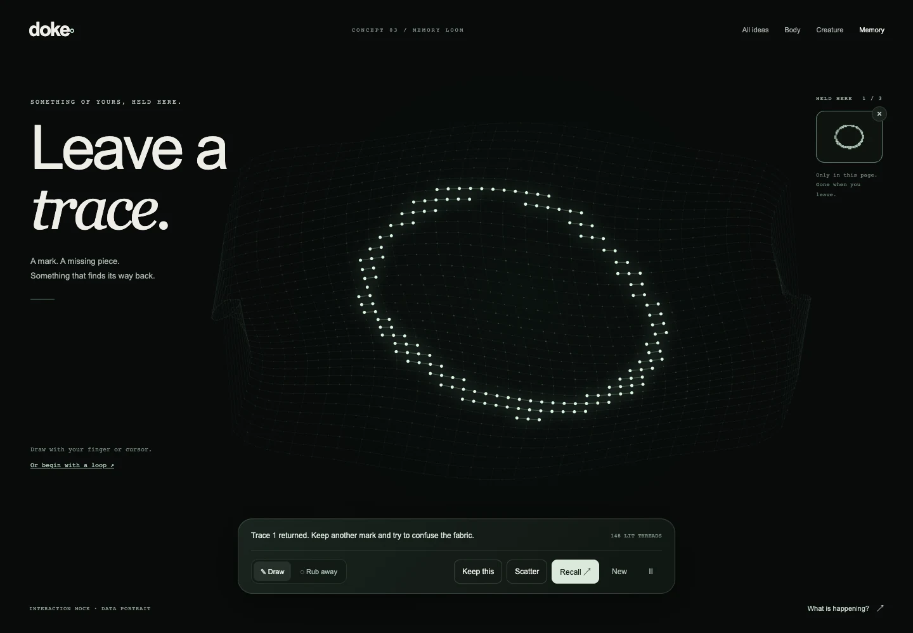

After a Bite
Drop something in. Follow it inside.
Make a little chain
reaction.
Play the body↗
A body you can play. A creature in your world.
A memory made from
your own marks.
Three sketches of what doke could become.

01
Drop something in. Follow it inside.
Make a little chain
reaction.

02Draw its world. Change its paths.
See what it does next.

03
Leave a trace. Take some away.
See what a fragment brings
back.
PLAYABLE DESIGN MOCKS · NOT THE PRODUCTION APP
Original visuals
and interaction rules. No accounts or uploads. Your input stays in
this page. Each mock explains what it actually computes.
SDR glow · Mouse, touch & keyboard
These sketches do not simulate
your personal brain or body.